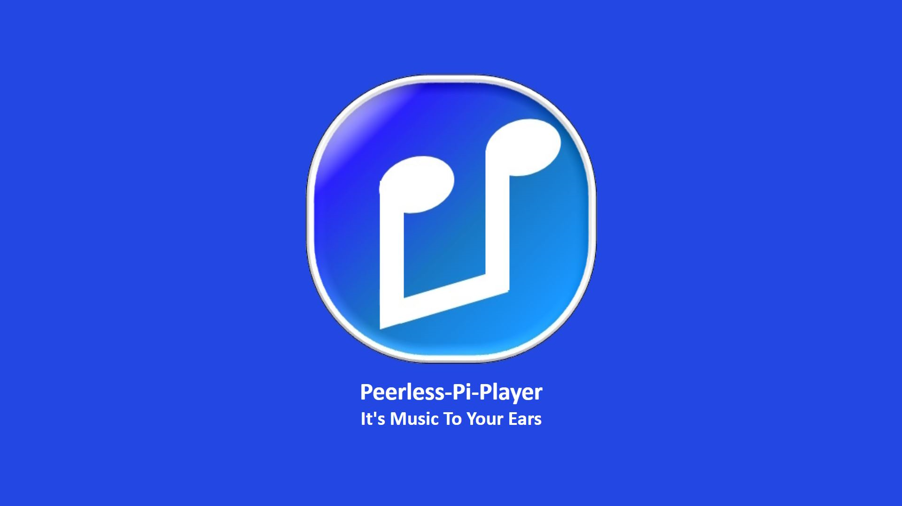
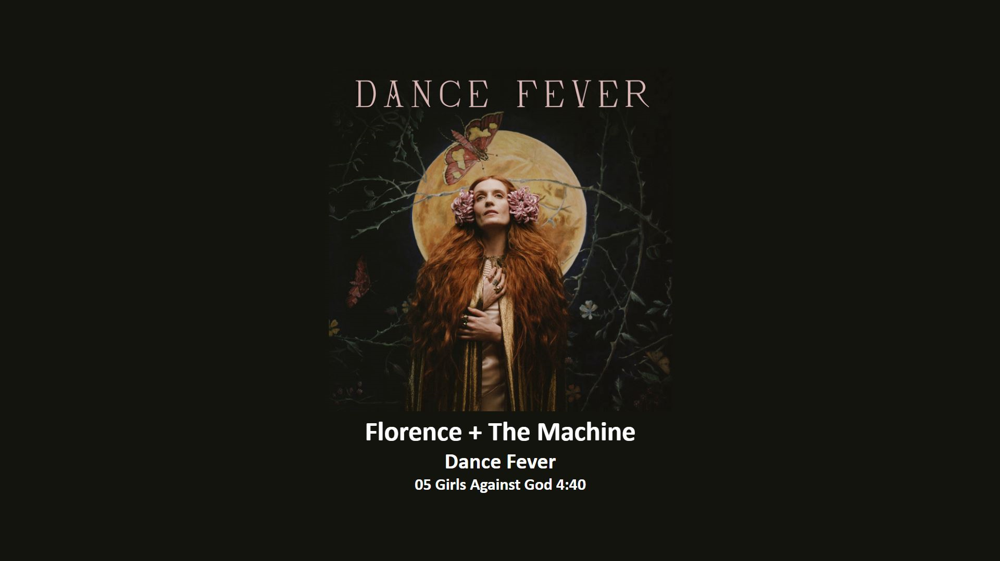

Peerless-Pi-Player
View Album Art on a Remote Screen
About Peerless-Pi-Player
Peerless-Pi-Player enables you to view album art and track details of the current playing song in Peerless Player on a remote screen, such as your flat-screen TV or remote monitor. There are two versions available, standard and mini. The standard version will run on any flat-screen TV or remote monitor. The mini version is specifically designed to run on a HyperPixel 4.0 Square Hi-Res Display.
The software for the Pi-Player runs on a Raspberry Pi, which connects to your remote screen with an HDMI cable. The Raspberry Pi is connected by Wi-Fi to your home network and works as a minion to Peerless Player. When a song plays on Peerless Player it sends by SFTP the album artwork jpg file and a json file with the song data to the Pi-Player, which then displays them in a full screen Chromium browser on the remote screen.
The Chromium browser is set up in kiosk mode on the Raspberry Pi and automatically starts when booted up, so all you have to do is plug in the HDMI and power to the Raspberry Pi and then press play in Peerless Player to get Art To Your Eyes.
Peerless-Pi-Player Screenshots
-

Idle Page -

Playing Page
Build and Installation Instructions
Hardware config and software download instructions to follow.